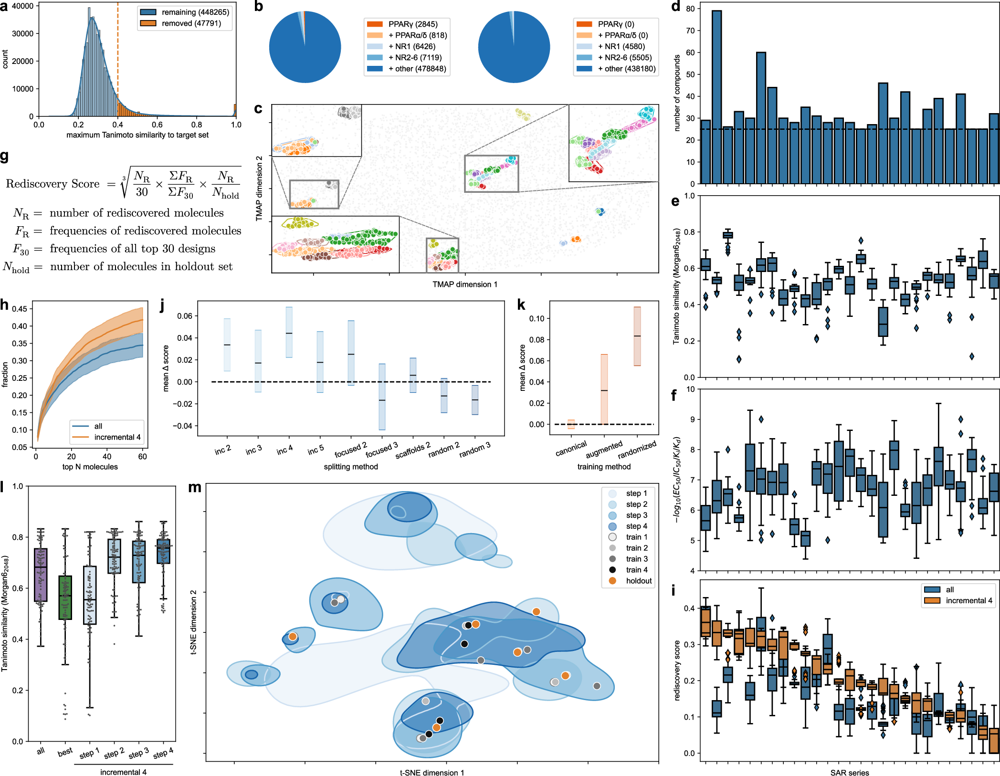

A solution-guided machine learning framework for multiaxial fatigue life prediction
Engineering Fracture Mechanics
暂时无法获取资料 · 将自动重试
暂无可用摘要，请查看原文。
原图待获取 · 查看原文
阅读原文（新窗口）公众号待补充
正在阅读 2026-10-14 · 第 2 批 归档。返回最新一期
试试其他关键词，或减少筛选条件。
Engineering Fracture Mechanics
暂时无法获取资料 · 将自动重试
暂无可用摘要，请查看原文。
原图待获取 · 查看原文
Structural optimization of drug molecules with incrementally trained language models
Nature Communications
按输入中唯一明确的方向标签 generative_design 判断，论文直接涉及生成式分子设计，且提出效力递进的增量微调策略并报告前瞻性应用，足以支持重点阅读推荐。[摘要] 此判断不代表实验强度已获核实，也不代表其直接切合智能运维或工程可靠性研究。
查看原推荐批次全文精读未完成 · 0/244 页 · 自动尝试已用尽，可补充资料或手动重试
本文研究如何用化学语言模型自动优化药物分子的靶向效力。作者模拟药物发现中的学习过程，以同一构效关系系列内效力逐渐提高的模板分子增量微调模型，引导其生成高活性类似物。摘要称，前瞻性配体开发获得了效力超过相应化学类型已知代表的分子，且不依赖外部评分。[摘要] 本文适合作为生成式设计的方法参考，但现有资料未提供具体效力数值、实验细节或比较结果；以下仅为摘要级解读。

查看大图原文图注：a A PPARγ ignorant CLM was developed using molecules from ChEMBL32 (bioactivity on any target ≤ 1 µM) excluding molecules with annotated activity on PPARs and molecules with Tanimoto similarity >0.4 (Morgan fingerprints, radius=2, 2048-bit). b Distribution of pretraining molecules with respect to activity on PPARs and related targets before (left) and after (right) activity-/similarity-based filtering. c TMAP 45 embedding of known PPARγ ligands revealed 27 SAR series (one color each). Background: 45k random ChEMBL molecules (5k shown). Characteristics of the 27 PPARγ agonist SAR series: number of molecules ( d ), potency distribution ( e ), internal pairwise Tanimoto similarity distribution ( f ). g Rediscovery score to evaluate CLM performance in structural optimization. h Fraction of rediscovered highly active ligands from the holdout set in the top-ranking designs retrieved by classical (all) or incremental CLM fine-tuning ( n = 135; lines: mean, shades: SEM). i Rediscovery scores achieved by classical (all) and incremental fine-tuning for the 27 PPARγ agonist SAR series datasets ( n = 25, five fine-tuning iterations with five sampling runs each). j Effects of different dataset splits on the rediscovery score. The difference (Δ) in the rediscovery score to classical fine-tuning is shown. k Effects of data augmentation (×10) and epoch-wise SMILES randomization on the rediscovery score relative to the canonical model. l Tanimoto similarity (Morgan fingerprints 46 ) of the top-100 designs ( n = 100) by perplexity obtained from CLMs fine-tuned with all template molecules per SAR series (all), only the most active subset (best), or the incremental approach at the different steps, to the holdout set containing the most active compounds of each series. m Effect of incremental fine-tuning on design distribution visualized by t-distributed stochastic neighbor embedding (t-SNE) for one exemplative SAR series (regions were defined by the top-100 designs (perplexity) for each training step; background: 10k random ChEMBL molecules). Boxplots in e , f , i , l show median and interquartile range (IQR), whiskers extend to the most extreme points within 1.5 × IQR. Data in h , j , k from five fine-tuning iterations over 27 datasets ( n = 135); black lines: mean Δ rediscovery score; shades: 95% CI derived from bootstrapping. Source data are provided as a Source Data file.
智药邦 · 2026-05-11
DrugAI · 2026-04-14
依据公开摘要整理，未核验全文细节。解读与建议不代表作者结论。 论文依据 1
中文导读
本文研究如何用化学语言模型自动优化药物分子的靶向效力。作者模拟药物发现中的学习过程，以同一构效关系系列内效力逐渐提高的模板分子增量微调模型，引导其生成高活性类似物。摘要称，前瞻性配体开发获得了效力超过相应化学类型已知代表的分子，且不依赖外部评分。[摘要] 本文适合作为生成式设计的方法参考，但现有资料未提供具体效力数值、实验细节或比较结果；以下仅为摘要级解读。
阅读建议推荐从生成式设计与递进训练策略角度重点阅读：其明确展示了利用构效关系序列引导候选生成的路径，并报告前瞻性应用成果；但不能据此认定其已适用于工程结构优化。[摘要][解读]
Agentic4PDM: Host-Governed Evidence Admissibility for Industrial Fault Diagnosis
摘要解读已完成，全文待补充
【摘要】本文面向标签稀缺、工况变化下的工业故障诊断，提出Agentic4PDM，将智能体的自适应调查与证据使用控制分离。智能体比较各类别标注参考并提出后续测量，确定性宿主检查请求、约束工具批次并划分证据角色。摘要报告轴承、电机及客户工业测试集上的宏平均F1提升，但未提供具体数值。本文值得关注的重点是诊断证据治理，而非仅依赖语言模型直接给出分类。[摘要]
原图待获取 · 查看原文
依据公开摘要整理，未核验全文细节。解读与建议不代表作者结论。 论文依据 1
中文导读
【摘要】本文面向标签稀缺、工况变化下的工业故障诊断，提出Agentic4PDM，将智能体的自适应调查与证据使用控制分离。智能体比较各类别标注参考并提出后续测量，确定性宿主检查请求、约束工具批次并划分证据角色。摘要报告轴承、电机及客户工业测试集上的宏平均F1提升，但未提供具体数值。本文值得关注的重点是诊断证据治理，而非仅依赖语言模型直接给出分类。[摘要]
阅读建议【解读】建议重点阅读其工具结果准入、证据角色划分与诊断协议设计，可为智能运维中的智能体诊断流程提供参考；性能提升幅度和工程适用性仍需全文核验。[摘要]
Transfer learning framework for fatigue life prediction of additively manufactured parts
IISE Annual Conference & Expo
摘要解读已完成，全文待补充
增材制造零件的长期服役性能与疲劳试验数据稀缺，是本文关注的核心问题。摘要将原始成形表面的深谷描述为应力集中与裂纹萌生位置，并提出利用迁移学习、表面粗糙度数据和疲劳试验数据预测疲劳寿命。[摘要] 解读：研究价值在于探索小样本条件下的寿命建模，但当前资料仅说明框架目标和潜在用途，没有提供模型结构、试验规模或预测结果，不能据此认定其有效性已得到验证。
原图待获取 · 查看原文
依据公开摘要整理，未核验全文细节。解读与建议不代表作者结论。 论文依据 1
中文导读
增材制造零件的长期服役性能与疲劳试验数据稀缺，是本文关注的核心问题。摘要将原始成形表面的深谷描述为应力集中与裂纹萌生位置，并提出利用迁移学习、表面粗糙度数据和疲劳试验数据预测疲劳寿命。[摘要] 解读：研究价值在于探索小样本条件下的寿命建模，但当前资料仅说明框架目标和潜在用途，没有提供模型结构、试验规模或预测结果，不能据此认定其有效性已得到验证。
阅读建议推荐作为疲劳可靠性与小样本寿命预测的方法线索阅读；摘要明确关联表面粗糙度、疲劳寿命和迁移学习，但重点推荐仍需核查具体实现及验证证据。[摘要]
PROTEAN: Beyond De Novo Generation - Can LLM Agents Perform Text-Guided Protein Structure Editing?
摘要解读已完成，全文待补充
蛋白质工程常需局部改造已有蛋白，同时保留催化基序和整体骨架。PROTEAN提出文本引导结构编辑基准，包含380个子任务、六类干预，采用语言模型编译几何约束、生成模型重塑骨架的两阶段流程。摘要称严格端到端生物物理成功率“starts at just 7.0%”，主要瓶颈是编辑范围泄漏与重新折叠失败。本解读仅依据摘要，适合关注约束生成设计及分层可靠性评估的读者。[摘要]
原图待获取 · 查看原文
依据公开摘要整理，未核验全文细节。解读与建议不代表作者结论。 论文依据 1
中文导读
蛋白质工程常需局部改造已有蛋白，同时保留催化基序和整体骨架。PROTEAN提出文本引导结构编辑基准，包含380个子任务、六类干预，采用语言模型编译几何约束、生成模型重塑骨架的两阶段流程。摘要称严格端到端生物物理成功率“starts at just 7.0%”，主要瓶颈是编辑范围泄漏与重新折叠失败。本解读仅依据摘要，适合关注约束生成设计及分层可靠性评估的读者。[摘要]
阅读建议推荐关注其自然语言目标到几何约束的转换，以及区分几何达标和生物物理可实现性的评价设计；它切合生成式设计，但对象是蛋白质，不能直接视为工程结构设计成果。[摘要][解读]
本期暂无符合条件的新核心推荐，可浏览扩展阅读与历史归档。
Fatigue Analysis with Artificial Intelligence and Machine Learning
CRC Press eBooks
摘要解读已完成，全文待补充
本章讨论人工智能与机器学习在疲劳分析及可靠性评估中的应用，涵盖寿命预测、裂纹检测和代理建模。针对疲劳研究数据有限、不确定性高的特点，摘要介绍物理引导与不确定性感知框架，并涉及神经网络、混合模型及疲劳设计中的神经优化。解读：重点在于结合领域知识与数据驱动方法，而非单纯增加模型复杂度。当前仅有摘要，不能判断具体算法性能或工程验证程度。[摘要]
依据公开摘要整理，未核验全文细节。解读与建议不代表作者结论。 论文依据 1
中文导读
本章讨论人工智能与机器学习在疲劳分析及可靠性评估中的应用，涵盖寿命预测、裂纹检测和代理建模。针对疲劳研究数据有限、不确定性高的特点，摘要介绍物理引导与不确定性感知框架，并涉及神经网络、混合模型及疲劳设计中的神经优化。解读：重点在于结合领域知识与数据驱动方法，而非单纯增加模型复杂度。当前仅有摘要，不能判断具体算法性能或工程验证程度。[摘要]
阅读建议建议作为疲劳可靠性与机器学习交叉研究的框架性读物，重点关注物理知识融合和不确定性处理；若需复现实验或比较预测精度，当前摘要不足以支撑。[摘要]
How the Classical Baseline Shapes Machine-Learning Speed Claims in Topology Optimization
摘要解读已完成，全文待补充
机器学习拓扑优化的加速优势，可能同时受经典程序效率与设计质量差异影响。本文摘要报告，作者在同一工作站复跑八种方法，并深入分析扩散生成模型与图神经优化器。通过改进经典有限元求解器、按相当刚度比较耗时，部分原有加速优势显著缩小甚至逆转。研究还提出最低报告要求，涵盖硬件、质量、计时范围及训练成本。解读：本文更适合用于审查性能比较是否公平，而非寻找新的结构生成算法。[摘要]
依据公开摘要整理，未核验全文细节。解读与建议不代表作者结论。 论文依据 1
中文导读
机器学习拓扑优化的加速优势，可能同时受经典程序效率与设计质量差异影响。本文摘要报告，作者在同一工作站复跑八种方法，并深入分析扩散生成模型与图神经优化器。通过改进经典有限元求解器、按相当刚度比较耗时，部分原有加速优势显著缩小甚至逆转。研究还提出最低报告要求，涵盖硬件、质量、计时范围及训练成本。解读：本文更适合用于审查性能比较是否公平，而非寻找新的结构生成算法。[摘要]
阅读建议推荐关注机器学习拓扑优化评测的研究者重点阅读，其价值在于检验加速宣称的比较条件，并为结构设计方法的公平实验提供报告框架；当前仅有摘要，具体实现仍待核查。[摘要]
ADVANCED COMPUTING TECHNOLOGIES: IoT,BLOCKCHAIN, AI, AND MACHINE LEARNING
Zenodo (CERN European Organization for Nuclear Research)
摘要解读已完成，全文待补充
本书围绕物联网、区块链与人工智能及机器学习的融合，介绍从计算基础、感知通信到可信机制和智能处理的技术体系，并延伸至数字孪生、联邦学习等主题。摘要称其连接“foundational theory”与系统设计及部署，应用覆盖智能电网、交通、农业和医疗。[摘要] 解读：适合作为智能运维相关技术的背景读物，但当前材料未呈现具体运维算法、实验结果或性能比较，不宜据此认定其具有突出的原创研究贡献。
依据公开摘要整理，未核验全文细节。解读与建议不代表作者结论。 论文依据 1
中文导读
本书围绕物联网、区块链与人工智能及机器学习的融合，介绍从计算基础、感知通信到可信机制和智能处理的技术体系，并延伸至数字孪生、联邦学习等主题。摘要称其连接“foundational theory”与系统设计及部署，应用覆盖智能电网、交通、农业和医疗。[摘要] 解读：适合作为智能运维相关技术的背景读物，但当前材料未呈现具体运维算法、实验结果或性能比较，不宜据此认定其具有突出的原创研究贡献。
阅读建议建议作为智能运维跨技术架构的入门参考，而非优先精读的实证研究；摘要覆盖感知、可信数据和智能决策，但缺少可核验的方法细节与效果证据。[摘要]
Audited leave-one-material-out benchmark of machine-learning models for multiaxial fatigue life prediction: code, predictions and uncertainty intervals
Zenodo (CERN European Organization for Nuclear Research)
摘要解读已完成，全文待补充
这是一项支持未测试合金多轴疲劳寿命预测研究的数据与代码发布，当前仅作摘要级解读。[摘要]资料提供材料域映射审计、逐试验预测、逐域保形覆盖率及复现配置，并同时包含留一材料与随机划分结果。解读：其阅读价值在于考察跨材料泛化的评估方式和结果可追溯性，而非已有证据证明某种模型更优。摘要未报告预测误差、覆盖率数值或模型排名，原始疲劳测量数据需另行获取。
依据公开摘要整理，未核验全文细节。解读与建议不代表作者结论。 论文依据 1
中文导读
这是一项支持未测试合金多轴疲劳寿命预测研究的数据与代码发布，当前仅作摘要级解读。[摘要]资料提供材料域映射审计、逐试验预测、逐域保形覆盖率及复现配置，并同时包含留一材料与随机划分结果。解读：其阅读价值在于考察跨材料泛化的评估方式和结果可追溯性，而非已有证据证明某种模型更优。摘要未报告预测误差、覆盖率数值或模型排名，原始疲劳测量数据需另行获取。
阅读建议建议作为疲劳可靠性研究的基准复现资料重点阅读，尤其关注跨材料验证、数据审计和不确定性评估；但当前不能据此推荐某个模型或认定其工程预测精度。
Beyond global drug-likeness: The FamDLike framework as a target family-specific drug-likeness score.
European journal of medicinal chemistry
摘要解读已完成，全文待补充
全局类药性评分是否适合所有靶标家族？本文摘要指出，不同家族的配体占据不同理化空间，统一标准可能造成系统性奖惩偏差。FamDLike结合期望度函数、广义加性模型和树模型，支持在可解释性与预测灵活性之间选择，并在独立分子集、化合物库筛选及生成任务中测试。其价值在于为生成式药物设计提供靶标感知的评价目标，但摘要未给出量化性能，不能据此认定优于现有方法。[摘要]
依据公开摘要整理，未核验全文细节。解读与建议不代表作者结论。 论文依据 1
中文导读
全局类药性评分是否适合所有靶标家族？本文摘要指出，不同家族的配体占据不同理化空间，统一标准可能造成系统性奖惩偏差。FamDLike结合期望度函数、广义加性模型和树模型，支持在可解释性与预测灵活性之间选择，并在独立分子集、化合物库筛选及生成任务中测试。其价值在于为生成式药物设计提供靶标感知的评价目标，但摘要未给出量化性能，不能据此认定优于现有方法。[摘要]
阅读建议推荐关注生成式分子设计评价与奖励函数的研究者重点阅读：其将靶标家族差异纳入类药性评分，并提供三类可独立使用的模型；是否值得实际采用仍需核对全文实验。[摘要]
本期暂无扩展阅读。
按已订阅的公众号筛选。标注“公开检索入口”的条目提供标题、来源和检索片段，点击标题可继续查找原文；文章内容及结论尚待核验。 文章跳转若要求验证码，请在浏览器中手动完成。这些线索不占用核心与扩展论文名额。
航空学报CJA · 2026-10-10 · 公开检索入口
于当地时间2026年10月7日共同发布2026年全球前2%顶尖科学家... 两刊简介航空学报CJA_小编微 信 号:HKXBCJA_xiaobian扫码添...
公开检索入口智源FlagOpen · 2026-10-09 · 公开检索入口
日,2026 人工智能开放计算大会暨众智 FlagOS 技术大会将以“... 社区联合北京智源人工智能研究院、中关村人工智能开源联盟(筹...
公开检索入口大模型观测员 · 2026-09-30 · 公开检索入口
#1 参赛选手本次更新模型(按发布时间顺序),共 14 个,持平上个月,其中北美模型占 10 个,本月是北美主场:*美元定价按1 USD ...
公开检索入口智源FlagOpen · 2026-09-29 · 公开检索入口
2026 人工智能开放计算大会暨众智 FlagOS 技术大会完整议程还... 社区,目前已经有 100多家成员单位.FlagOS 是一款专为异构 AI ...
公开检索入口航空材料学报 · 2026-09-29 · 公开检索入口
(2026). DOI: 10.1038/s43246-026-01212-yPART.05耶鲁大学开发金属局部变形映射技术支撑航空发动机和燃气轮机高温材料设计向上...
公开检索入口航空学报CJA · 2026-09-28 · 公开检索入口
期2026年10月18日申 请 结 果 反 馈 日 期预计2026年10月底前END两刊简介航空学报CJA_小编微 信 号:HKXBCJA_xiaobian扫码添...
公开检索入口PaperWeekly · 2026-09-25 · 公开检索入口
10—12 月还有哪些 CCF 会议能赶上?我们整理了一份转投清单.... NLP、语言理解与生成、语言模型、多模态语言、RAG(偏语言任...
公开检索入口机器之心 · 2026-09-24 · 公开检索入口
机器之心发布2026 年 9 月 22 日,阿里巴巴集团 CEO 吴泳铭在杭州云栖大会发表演讲,阐述对「机器智能」时代的思考:机器正在成...
公开检索入口航空学报CJA · 2026-09-22 · 公开检索入口
2026年9月13日,航空学报杂志社一行,再次走出国门,深度参与... 两刊简介航空学报CJA_小编微 信 号:HKXBCJA_xiaobian扫码添...
公开检索入口智源FlagOpen · 2026-09-21 · 公开检索入口
开发者可直接下载使用,无需自行迁移.截至 2026 年 8 月,... 北京智源研究院联合众多科研机构、芯片企业、系统厂商、算法和...
公开检索入口机械工程学报 · 2026-09-19 · 公开检索入口
“数字孪生赋能的高端装备智能运维”专栏.本专栏开展“数字孪... 2026, 62(12): 77-86. 论文摘要:旋转机械的健康监测与早期故障检...
公开检索入口智源FlagOpen · 2026-09-18 · 公开检索入口
社区联合北京智源人工智能研究院、北京量子信息科学研究院等机构、中关村人工智能开源联盟(筹)等机构,将于 2026 年 10 月 17-...
公开检索入口航空学报CJA · 2026-09-16 · 公开检索入口
2026年9月15日,高等教育评价专业机构软科正式发布2026“软科... 软科两刊简介航空学报CJA_小编微 信 号:HKXBCJA_xiaobian扫...
公开检索入口2026-10-14 21:06 更新。常规检索：2026-09-14 至 2026-10-14。
已实现来源及本轮采集状态；公开接口无需登录即可运行。
官方主会论文；缓存 24 小时；按研究方向和现有时间窗口筛选。
本轮采集完成。 本轮获取 168 条元数据。
Scopus 标准元数据检索已接入；完整视图需额外授权。 本轮获取 19 条元数据。
接口限流或配额受限，等待恢复或调整配额。
接口限流或配额受限，等待恢复或调整配额。
公众号独立采集：最近检查 10-14 21:00（北京时间）。公众号订阅与同步：公开索引已接入：读取 11 条文章元数据，本期 11 条。 微信后台文章列表受限；已通过公开搜索获取线索，链接为检索入口，非已核验全文。 最近同步：10-05 20:35（北京时间）。 导出超过 3 天，请检查同步任务；将尝试公开索引。 公开查询完成 3/3 项（复用缓存 0 项）。 最近检查：10-14 20:35（北京时间）。 公众号公开索引：公开索引已接入：本期读取 0 条公众号文章线索，按 35 个订阅筛选。 微信后台文章列表受限；线索提供公开检索入口，非已核验全文。 公开查询完成 3/3 项（复用缓存 3 项）。
本轮采集完成。 本轮获取 37 条元数据。
Clarivate Starter API 已授权：检索 3 个方向，本期获取 61 条元数据。
本轮采集完成。 本轮获取 125 条元数据。
本轮采集完成。 本轮获取 134 条元数据。
接口限流或配额受限，等待恢复或调整配额。
本轮采集完成。 本轮获取 8 条元数据。
依据论文的期刊与原文链接归类，可筛选本期已有记录。
按期刊名称或原文链接筛选已有记录；未独立抓取此平台。
按期刊名称或原文链接筛选已有记录；未独立抓取此平台。
按期刊名称或原文链接筛选已有记录；未独立抓取此平台。
按期刊名称或原文链接筛选已有记录；未独立抓取此平台。
按期刊名称或原文链接筛选已有记录；未独立抓取此平台。
按期刊名称或原文链接筛选已有记录；未独立抓取此平台。
按期刊名称或原文链接筛选已有记录；未独立抓取此平台。
按期刊名称或原文链接筛选已有记录；未独立抓取此平台。
按期刊名称或原文链接筛选已有记录；未独立抓取此平台。
按期刊名称或原文链接筛选已有记录；未独立抓取此平台。
按期刊名称或原文链接筛选已有记录；未独立抓取此平台。
按期刊名称或原文链接筛选已有记录；未独立抓取此平台。
按期刊名称或原文链接筛选已有记录；未独立抓取此平台。
按期刊名称或原文链接筛选已有记录；未独立抓取此平台。